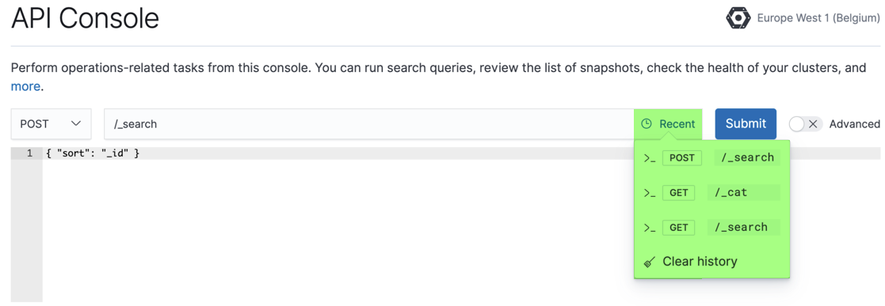

Elasticsearch Add-On for Heroku now supports additional features that let you do more with our hosted offering:
Elasticsearch API console now shows your recent queries. The console that provides API access to your Elasticsearch clusters directly from our UI now makes it easier to work with queries you’ve run previously. A new Recent dropdown menu shows a list of your previous queries:
In addition, the API console now stores request and results per deployment, so you can go to a deployment and see only the queries that you performed there.
To access the API console, select one of your Elasticsearch clusters in the Cloud UI and then click Console.
-
Added confirmation when deleting deployments. Deleting a deployment now requires that you enter
DELETEto help prevent deleting deployments permanently by accident. - Better tables across the UI. If it’s a table in our UI, that table now uses a responsive and sortable layout to make it easier to get the view that you want. Available anywhere in the UI where a table is used.
-
Filter deployments by template. To make it easier for you to identify deployments based on a particular template, you can now filter by template using queries such as
template:aws-io-optimized. The search field is available on the Deployments page. In addition, search bars now remember your latest queries so you don’t need to reenter them. - Activity page shows in-progress Elasticsearch snapshots. To make it easier to see how a configuration change is progressing for deployments that contain large amounts of data, the Activity page now shows in-progress Elasticsearch snapshots. You can see information about in-progress snapshots when you select an Elasticsearch cluster in the Cloud UI and then click Activity. To keep the Activity page uncluttered, information about in-progress snapshots gets shown only during configuration changes.
Service release: July 3, 2019 (Milestone 24)
Bug fixes
We fixed a bug where you couldn’t edit the Kibana zone count to change the level of fault tolerance.
Service release: July 3, 2019 (Milestone 24)